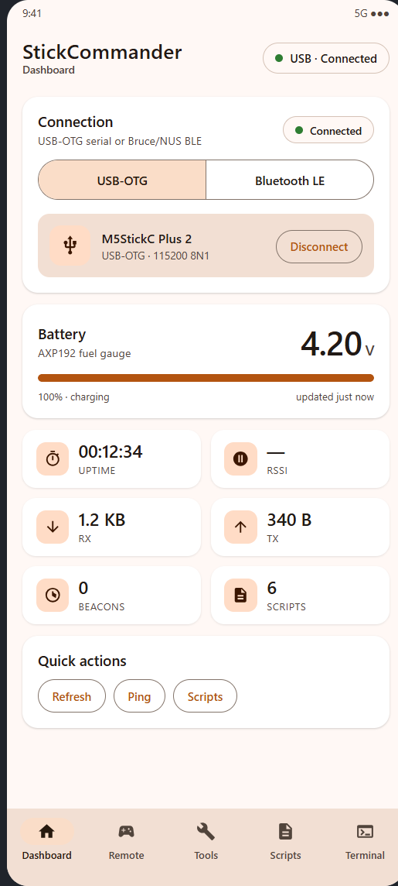
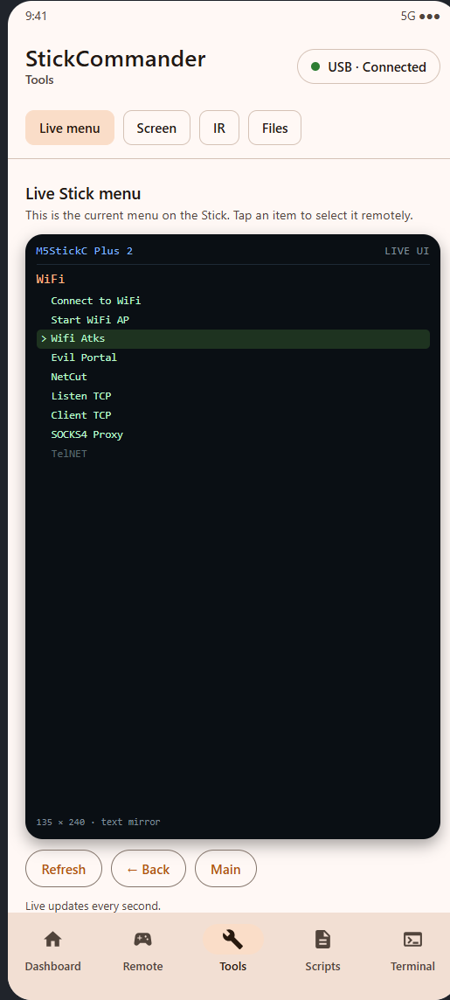
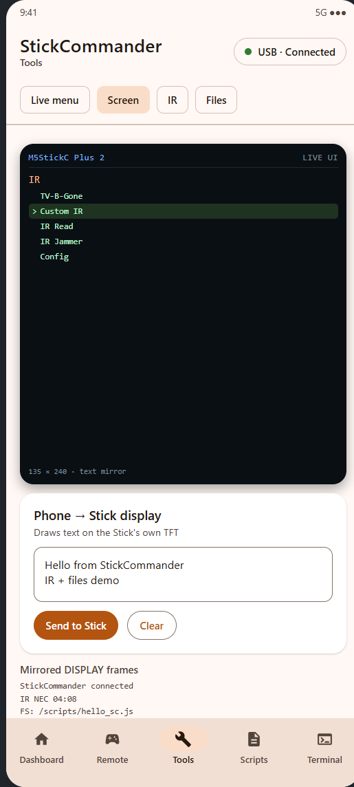
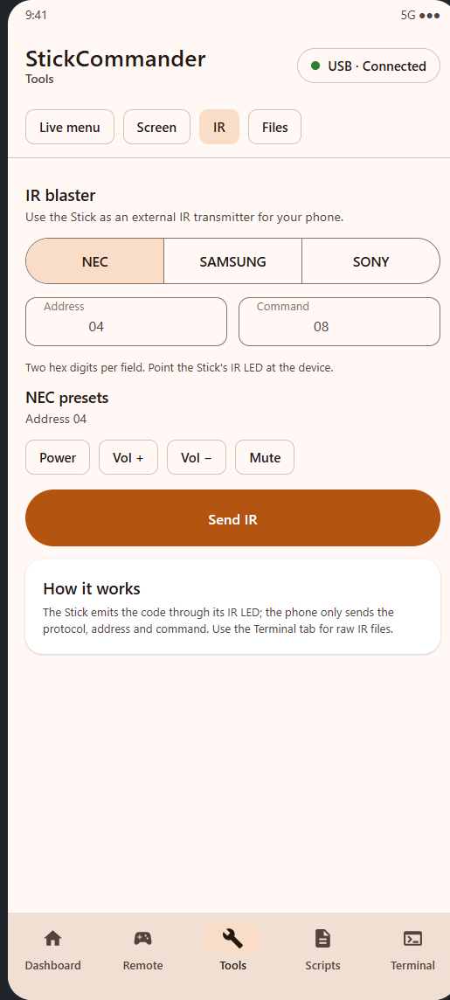
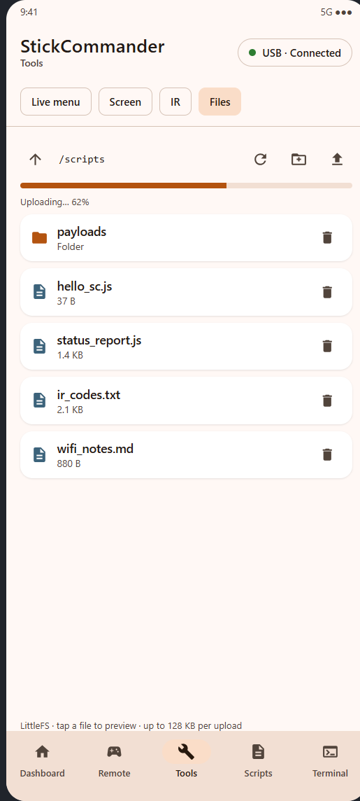
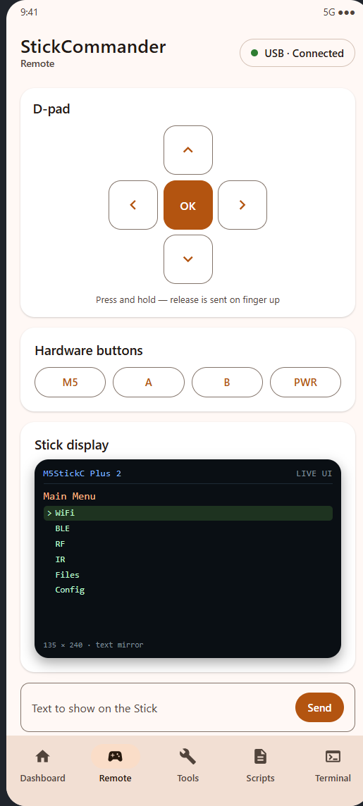

Твой Stick — на экране телефона.
StickCommander зеркалит настоящее меню Bruce на M5StickC Plus 2, рисует текст на его экране 135×240, отправляет ИК-коды, работает с LittleFS и показывает полный терминал — по USB-OTG или Bluetooth LE.

Шесть экранов — один кабель
Всё, что умеет Stick, разложено по разделам. Приложение общается с прошивкой в обе стороны: телеметрия и состояние меню приходят обратно, команды уходят на устройство.
Живое меню Stick
Читает реальный список пунктов прошивки — заголовок, подписи, недоступные пункты и текущее выделение — и обновляется каждую секунду. Тап открывает пункт на Stick.
Зеркало экрана и рисование
Текстовое зеркало интерфейса на телефоне и обратное направление: отправьте текст, и Stick нарисует его на своём TFT.
ИК-передатчик
NEC, Samsung и Sony (12/15/20 бит), hex-поля и пресеты в один тап. Излучает Stick, телефон лишь говорит, что отправить.
Менеджер файлов
Просмотр LittleFS, предпросмотр текстовых файлов, загрузка своих файлов чанками по 256 байт с прогресс-баром, папки, переименование и удаление.
Пульт
Виртуальный D-pad и кнопки M5/A/B/PWR с удержанием. Нажатие и отпускание — отдельные события, поэтому долгое нажатие работает как на устройстве.
Терминал и скрипты
Логи с фильтрами и ручной ввод команд, плюс скрипты на телефоне: загрузить на Stick и запустить, не трогая устройство.

Tools · Меню
Tools · Экран
Tools · ИК
Tools · Файлы
RemoteПревью отрисованы по реальной Compose-разметке приложения — те же компоненты и тексты, что в установленной сборке.
Как это работает
В Bruce компилируется небольшой мост команд. Приложение говорит по построчному ASCII-протоколу; больше ничего не патчится.
Транспорт
USB-OTG serial 115200 8N1 через мост CH9102 или BLE через Nordic UART Service / BLE API Bruce. Команды одинаковые.
Настоящее меню, а не копия
Мост читает глобальный вектор options и выставляет
forceMenuOption, EscPress или
returnToMenu. Приложение управляет самой прошивкой.
Экран и ИК
Текст раскладывается и рисуется на TFT цветами текущей темы. ИК использует штатные кодировщики NEC/Samsung/Sony из Bruce, поэтому тайминги верные.
Файлы
Пути и данные LittleFS передаются в base64. Загрузка идёт чанками по 256 байт, поэтому файл до 128 КБ спокойно помещается в RAM.
# запросить текущее меню > CMD:MENU:LIST < MENU:TITLE:V2lGaQ== < MENU:ITEM:0:1:Q29ubmVjdCB0byBXaWZp < MENU:END # открыть пункт 0 на устройстве > CMD:MENU:OPEN:0 < OK:menu:0 # нарисовать текст на Stick > CMD:SCREEN:TEXT:SGVsbG8= < OK:screen:text # NEC-код питания, адрес 04 > CMD:IR:NEC:04:08 < OK:ir:NEC # список LittleFS > CMD:FS:LIST:Lw== < FS:ENTRY:D:0:c2NyaXB0cw== < FS:LISTEND
Установка за четыре шага
Нужны M5StickC Plus 2, OTG-кабель (или Bluetooth) и пять минут.
Сделать бэкап (рекомендуется)
esptool --port COM3 read-flash 0x0 0x800000 backup.bin — останется путь
назад к стоковой прошивке. Порт — CH9102 UART, VID 1A86 / PID 55D4.
Прошить merged-образ
esptool --port COM3 --baud 460800 write-flash 0x0 Bruce-m5stack-cplus2.bin.
Образ пишется с адреса 0x0 и включает bootloader, разделы и приложение.
Установить APK
adb install -r StickCommander-debug.apk или скопировать файл на телефон
и разрешить установку из неизвестных источников.
Подключиться
USB: подключить и разрешить доступ. BLE: включить Config → Advanced → Toggle BLE API на Stick и просканировать из приложения.
Прошивка построена на Bruce (AGPL-3.0). Исходники, патчи и рецепт сборки лежат в репозитории, а к каждому релизу приложены соответствующие исходники прошивки.
Собрать самому
Прошивка
git clone https://github.com/BruceDevices/firmware.git bruce
cd bruce
git checkout 1.16.1
# скопировать firmware/integration/* поверх дерева
pio run -e m5stack-cplus2
В папке integration — мост, изменённая задача serial, правки BLE-сервиса, патч FastLED/LTO и конфигурация PlatformIO.
Android-приложение
./gradlew assembleDebug ./gradlew testDebugUnitTest
Нужны JDK 17 и Android SDK 35. Внутри Jetpack Compose, Material 3, репозиторий с очередью команд и два транспорта за одним интерфейсом.
Протокол кратко
Всё построчно и читаемо. Полное описание — firmware/README.md.
| Область | Команды |
|---|---|
| Система | CMD:PING, CMD:SYS:STATUS, CMD:TEXT: |
| Кнопки | CMD:BTN:M5|A|B|PWR:PRESS|RELEASE, CMD:NAV:UP|DOWN|LEFT|RIGHT|OK |
| Меню | CMD:MENU:LIST, CMD:MENU:OPEN:n, CMD:MENU:BACK, CMD:MENU:HOME |
| Экран | CMD:SCREEN:TEXT:<base64>, CMD:SCREEN:CLEAR |
| ИК | CMD:IR:NEC|NECEXT|SAMSUNG:a:c, CMD:IR:SONY:a:c:bits |
| Файлы | CMD:FS:LIST|READ|DELETE|MKDIR|RENAME|BEGIN|CHUNK|END|WRITE |
| Скрипты | CMD:SCRIPT:LIST|RUN|LOAD|STOP |